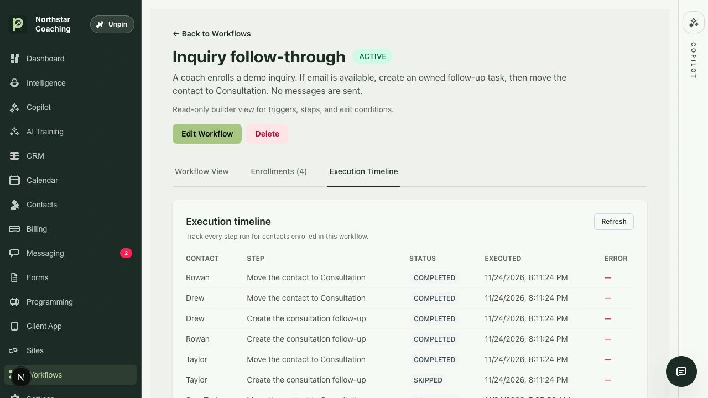
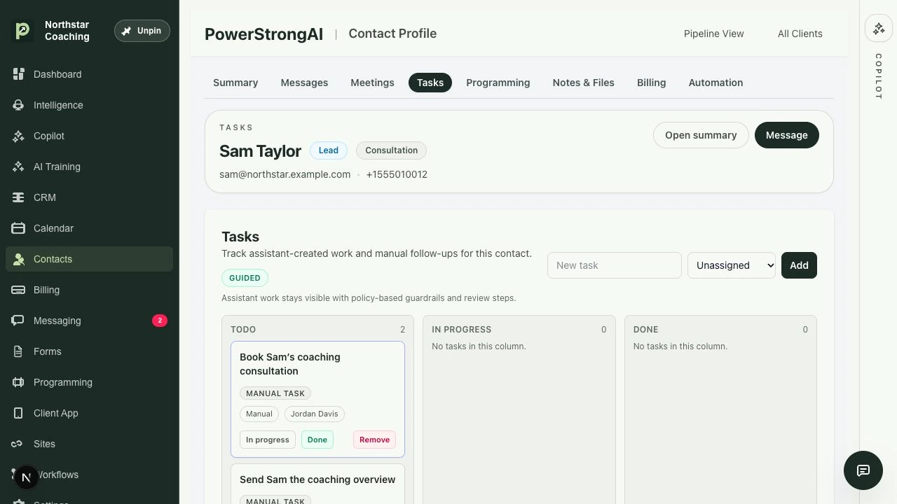

TENANCY & AI
Workspace context follows requests through role and entitlement guards into explicitly tenant-scoped services. Copilot tools operate within that same application context.
How I gathered requirements, built workflows, and verified the results in PowerStrongAI.
Requirements guide user verification. Workflow design guides browser checks. Release follows verification →
I met with my cofounder to understand his coaching business. We identified what to preserve and what the software needed to improve.
I turned those needs into steps a coach could start, review, and follow across the product.
I used browser automation to check expected behavior, edge cases, and failures.
Walk through the outcome with my cofounder to confirm it fits his coaching process. Check that the resulting records persist after reload.
Publish the reviewed change and verify it in the live environment.
Worked example
Help a coach turn a new inquiry into an owned follow-up. The coach should be able to see who is responsible and what still needs attention on the lead’s record.
The coach starts the workflow by enrolling a lead. The first step checks for an email before creating the consultation task. The second step updates the CRM stage independently. The execution history records both outcomes.


CREATE_TASK COMPLETED
CHANGE_STAGE COMPLETED
This browser check opens Sam Taylor’s execution timeline and verifies the two completed steps from the run above.
await tab.goto(workflowUrl);
await tab.playwright.getByRole('button', {
name: 'Execution Timeline', exact: true,
}).click();
const completed = tab.playwright.getByRole('row')
.filter({ hasText: 'Sam Taylor' })
.filter({ hasText: 'COMPLETED' });
for (const step of [
'Create the consultation follow-up',
'Move the contact to Consultation',
]) {
await completed.filter({ hasText: step }).waitFor({ state: 'visible' });
}
if (await completed.count() !== 2) {
throw new Error('Expected exactly two completed steps for Sam');
}The timeline check records what each run actually did. Rowan’s completed task reproduces the placeholder-email failure.
for (const [lead, observedStatus] of [
['Taylor', 'SKIPPED'],
['Rowan', 'COMPLETED'],
['Drew', 'COMPLETED'],
]) {
const rows = tab.playwright.getByRole('row', {
name: new RegExp('^' + lead + ' '),
});
await rows.filter({ hasText: 'Create the consultation follow-up' })
.getByRole('cell', { name: observedStatus, exact: true })
.waitFor({ state: 'visible' });
await rows.filter({ hasText: 'Move the contact to Consultation' })
.getByRole('cell', { name: 'COMPLETED', exact: true })
.waitFor({ state: 'visible' });
if (await rows.count() !== 2) throw new Error(lead + ' has unexpected execution count');
}I checked the same-key retry and the unknown-contact rejection through the API. The browser checks read completed demo runs.
Walk through the saved task and stage with my cofounder to confirm they match how he wants consultation follow-up to work.
Reload the coach’s contact view and check that Sam Taylor is in Consultation with the saved consultation task. The API before-and-after check returned exactly one new task.

Published this walkthrough to GitHub Pages and verified the live page. The workflow was exercised in the demo workspace.
Workspace context follows requests through role and entitlement guards into explicitly tenant-scoped services. Copilot tools operate within that same application context.
Signed Stripe webhooks, duplicate-event checks, and purchase reconciliation paths connect provider events to workspace records and downstream workflows.
Templates, client assignments, and completed workouts have separate lifecycles. Replacement and synchronization rules account for session progress and locks.